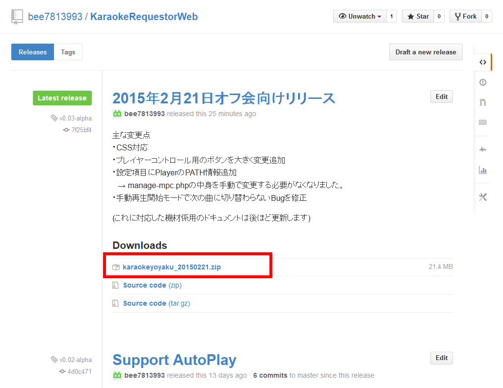

(2015年2月5日バージョン)


- ツールのダウンロード
にアクセスして
releaseのところをクリック。
release画面から最新版のバイナリ(sourceじゃない.zipファイル)をダウンロード。

- ツールの展開
zipファイルを読み書き可能なところに展開する。(作者はc:\prognsというフォルダを作ってそこに展開してます)
- ファイル検索ソフトのインストールと設定
everything file searchをがインストールされていなければダウンロードしてきてインストール。
ダウンロード先
http://www.voidtools.com/
http://www.voidtools.com/
対象の動画ファイルだけが検索できるように設定する。
「検索データ」→「NTFS」の設定ですべてのドライブで「データベースに含める」のチェックを外す。(意図しない場所にあるファイルが検索されないようにするため)
「検索データ」→「フォルダ」の設定に、動画が入っているディスク＆フォルダを追加する。
後でディスクを追加したときは、ここに追加設定をする。
「検索データ」→「除外」設定の中の「検索対象を以下のファイルのみに制限する」の欄に、
動画の拡張子を設定する。
例）
動画の拡張子を設定する。
例）
*.mp4;*.ave;*.mkv;*.flv;*.mpg;*.mov
ほかのファイル形式とかあるならそれも追記する。
「OK」もしくは「適用」で設定を反映させると、
Windows ファイアウォールの設定画面が出るので、両方のネットワークを通信許可するようにチェックを入れて「アクセスを許可する」ボタンを押す。
Windows ファイアウォールの設定画面が出るので、両方のネットワークを通信許可するようにチェックを入れて「アクセスを許可する」ボタンを押す。
- ネットワークの設定
ポータブルWiFiなどでネットワークに接続する。
WiFiアクセスポイントでは「プライバシーセパレータ」などの機能はOFFにしておく。
WiFiアクセスポイントでは「プライバシーセパレータ」などの機能はOFFにしておく。
コマンドプロンプトを開き
ipconfigコマンドを実行する
「IPv4 アドレス」で表示されたIPアドレスが機材PCのIPアドレスになる。
機材PCのIPアドレスと、WiFiアクセスポイントへの接続情報(SSIDとパスワード等)を参加者に伝えてアクセスできるようにする。
【自動再生機能を使う場合の設定】
- 動画再生ソフトのインストールとパス指定
MediaPlayerClassic -BEもしくは-HCがインストールされていなかったらダウンロードしてきてインストール。
MPC-BEのダウンロード先
MPC-BEのダウンロード先
64bitPCでも、x64版じゃなくてx86版の方がおすすめ
MPC-BE(-HC)を起動して各種設定。
「再生」設定で、再生を1回に設定
「フルスクリーン」設定で
「フルスクリーンでファイルを開く」にチェックを入れ、
動画を表示したいモニターの種類を選ぶ。(デュアルディスプレイ環境で使うときに表示したいモニターを選択する)
動画を表示したいモニターの種類を選ぶ。(デュアルディスプレイ環境で使うときに表示したいモニターを選択する)
「ウェブ インタフェース」設定で「このポートで待機：」にチェックを入れ、右の番号を「13579」とする。
「OK」もしくは「適用」で設定を反映させると、
Windows ファイアウォールの設定画面が出るので、両方のネットワークを通信許可するようにチェックを入れて「アクセスを許可する」ボタンを押す。
Windows ファイアウォールの設定画面が出るので、両方のネットワークを通信許可するようにチェックを入れて「アクセスを許可する」ボタンを押す。
以上でMediaPlayerClassicの完了。
- ツールの起動
ツールを展開したフォルダの、karaokeyoyaku直下にある。
start.bat
start.bat
をダブルクリック等で起動する。
これで、ブラウザから
http://[機材PCのIPアドレス]/
にアクセスするとツールのトップページになるはず
・ツールの初期設定
一番下の「設定」ボタンを押す。
「新しいファイル名」の設定項目にオフ会開始時に新しいデータベースファイル名指定
→するとリクエストに何も登録されていない状態になる。
「動作モードの選択」の設定項目に
自動再生開始モード ： リクエストのされている動画を順番に再生。次の曲の開始で一時停止しない。
手動再生開始モード ： リクエストのされている動画を順番に再生。次の曲の開始で一時停止するので参加者が再生開始ボタンを押して曲スタート。
手動プレイリスト登録モード ： 自動再生機能は使わない。機材係がリクエストを見て動画再生ソフトのプレイリストに登録していく。(未対応の再生ソフトを使いたい場合に設定)
「MediaPlayerClassic PATH設定」
MediaPlayerClassicがインストールされている場所を指定。
・32bitWindowsの場合
"C:\Program Files\MPC-BE\mpc-be.exe" (リストから選択可)
・64bitWindowsに32bit版Playerをインストールした場合
"C:\Program Files (x86)\MPC-BE\mpc-be.exe" (リストから選択可)
・64bitWindowsに64bit版Playerをインストールした場合
"C:\Program Files\MPC-BE\mpc-be.exe" (リストから選択可)
・その他のPATHにインストールされている場合
テキストボックスに入力
以上で、カラオケオフを開始するための準備が完了。
・参加者向けに接続情報を表示
TOP画面の「接続情報表示」リンクをクリックすると
参加者に向けて接続情報を案内するための画面を表示できます。
・「接続用Wifi SSID」「接続用Wifi パスワード」
使用しているWifiのSSID。テキストボックスになっているので手動で入力
・接続先URL
検索＆予約ツールにアクセスするためのURL。自動で表示
(機材係のブラウザでhttp://localhost/とかでアクセスしているとlocalhostになって参加者がアクセスできないので手動で書き換える)
- 自動再生Playerの起動
ツールを展開したフォルダ内
karaokeyoyaku\nginx\html 内にある
autoplaystart_mpc_root.bat
をダブルクリックなどで起動。
をダブルクリックなどで起動。
リクエストされた動画の中の一番下の「未再生」となっているものから再生され続けます。
何かの拍子で自動再生が止まってしまった場合、
今流れている動画の再生が終わったところで
もう一度、
autoplaystart_mpc_root.bat
を起動する。
最後終了するときは、
autoplaystart_mpc.batを起動したときに開いたコマンドプロンプトを右上の×ボタンを押して終了させる。
・トラブルシューティング
- 最初からブラウザでツールにアクセスできない。
ほかのソフトがwebサーバが使うTCP80番ポートを握っているかも。
Skypeが握っていることがよくあるので、設定で80番を使う設定を外してskypeを一度停止して起動。
何が80番ポートをつかんでいるかわからないときは、「管理者として実行」したコマンドプロンプトで
netstat -b -n -a -p TCP
コマンドを実行して、
TCP 0.0.0.0:80
のある行の次の行に書いているのが掴んでいるので、何らかの方法で止めといてね。
掴んでいるプログラムを止めたり変更したりした後は、一度このツールを止めてから起動します。
止めてから起動の方法(面倒ならPCを再起動したほうが手っ取り早い)
止める → start.batを起動したときに現れたコマンドプロンプトを×ボタンで終わらせる。 → タスクマネージャーでnginx.exeを全部終了させる。
起動 → start.batをダブルクリック。 - 検索＆予約ツールに参加者のブラウザでアクセスできなくなってしまった。
・Wifiアクセスポイントが切り替わってしまっていないか確認 (機材PCor参加者の端末)
・機材PCからのアクセスもできない場合、webサーバ(nginx)が止まってしまったかもしれないので、start.bat起動時のコマンドプロンプトを×ボタンで終了させて、start.batをもう一度起動する(機材PC)
・Wifiアクセスポイントに動作がおかしくなっているかもなのでWifiアクセスポイントを再起動する。